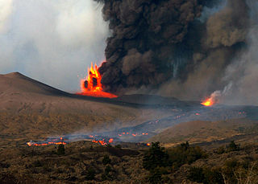

<link rel="import" href="../bower_components/mark-down/mark-down.html"/>
<polymer-element name="volcanoes-page" noscript>
    <template>
        <mark-down cross-fade>
            Volcanic Eruptions
            ==================
            
            Mount Etna, Sicily, Italy (an MEDC)
            -----------------------------------
                        
            Mount Etna has erupted 13 times between 1970 and 2000. There was no
            warning to the eruption on October 27, 2002, with a short period of
            seismic activity before.
        </mark-down>
        <figure style="float:right" cross-fade>
            
            <figcaption>The 2002 eruption of Mt. Etna</figcaption>
        </figure>
        
        <mark-down cross-fade>
            ### Causes
            
            There is a smaller area of oceanic crust called the Messina Plate
            between continental African and Eurasian Plates. The African Plate
            moves northwards, pushing oceanic crust into and under the Eurasian
            Plate. This forms a subduction zone. The descending crust melts
            (due to friction and heat from the mantle), creating magma. The new
            magma is lighter than the surrounding mantle, and so rises to the
            surface, creating volcanoes.
            
            ### Impact
            
            No deaths or serious injuries were reported.
            
            Lesser villages on Mt. Etna’s eastern slopes were destroyed by
            initial earthquakes. Some buildings were destroyed by lava. The
            airport was closed for some days. Roads covered by ash, disturbing
            traffic. Crops were affected by the ash. Trees on higher slopes
            were destroyed by fires.
            
            ### Response
            
            Hundreds of families were evacuated. It took several days for
            firefighters to contain the fire.
            
            Merapi volcano, Indonesia (an LEDC)
            -----------------------------------
            
            Merapi is known for violent eruptions, being the most active
            volcano in Indonesia.
            It is 28 km (17 mi.) north of Yogyakarta, a large city. Thousands
            live on the volcano’s flanks. It has erupted regularly since the
            year 1548. One of these eruptions happened on Nocember 22, 1994.
        </mark-down>
        <figure style="float:left" cross-fade>
            
            <figcaption>Mount Merapi</figcaption>
        </figure>
        
        <mark-down cross-fade>
            ### Causes
            
            Indonesia makes up part of an island arc on a destructive boundary.
            Here, the north-eastern Indian Plate (oceanic crust) is pushed
            under the continental Eurasian plate. The oceanic crust melts (due
            to friction and heat from the mantle). The new magma rises to the
            surface to form volcanoes.
            
            ### Impact
            
            * Ruined several villages
            * 60+ deaths
            * Area blanketed in thick cloud of red-hot ash, making it too dark
              for people to see, before all could escape
            * Houses collapsed due to ash
            * Villagers working in fields were burnt by ash
            * When the ash cloud dissipated, survivors went to temporary shelters
            
            ### Response
            
            * Prediction - This is done so that scientists can warn villagers
              before an eruption
                - Activity monitored with seismometers
                - Monthly visits to the summit
            * Protection - mudflow dams to stop lahars from reaching villages
              and roads
            * Evacuation - a group of locals is trained to give emergency care
              to the injured and to organize evacuation transport and temporary
              shelters
            * Resettlement
                - People are not allowed to live within a Prohibited Area near
                  the summit
                - Evacuated villagers are given 2 options:
                    1. Live in a relocation settlement
                    2. Move to a less crowded island
                    + Most return to their villages in spite of the risk
        </mark-down>
        <footer cross-fade>
            <p>Sources:</p>
            <ul>
                <li>The New Wider World (by David Waugh) p. 266-9</li>
                <li>
                    <a href="https://en.wikipedia.org/wiki/Mount_Merapi">
                        Mount Merapi (Wikipedia)
                    </a>
                </li>
            </ul>
        </footer>
    </template>
</polymer-element>